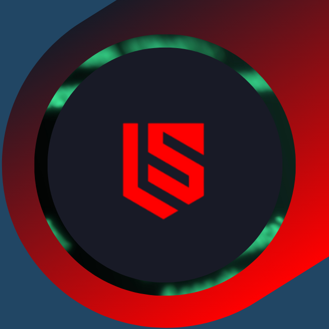

Lucas S.
Cybersecurity | Offensive Security
Projetos & Pesquisas
Fontes Abertas de Inteligência (OSINT): Estratégias para Garantir a Integridade e Admissibilidade em Investigações Forenses Digitais.
me@lucassouza.io